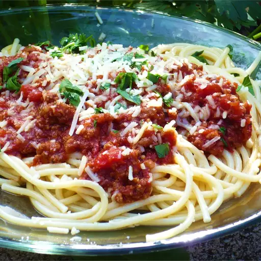

Harrison's Pasta

Description
This is my signature pasta recipe, it is much superior to all other pasta's.
The recipe is full of flavour and escpecially due to it's addition of Olives and Hot Salami,
along with generous amount of garlic and onion.
Ingredients
- 5 cloves Garlic
- 1 Brown Onion
- 2 canned tomatoes
- 2 tbsp tomato paste
- 1/2 stick Hot Salami
- a dozen Olives
- packet of Fettuccine Pasta
- Olive Oil
Steps
- Finely chop garlic. Roughly chop brown onion, hot salami, and olives.
- Heat a drizzle of olive oil in a large frying pan over medium-high heat.
Once oil is hot, cook garlic and onion for 3 minutes or until just browning.
- Add hot salami and tomato paste to the pan, stir through for 2 minutes.
- Then add 2 cans of tomatoes and olives to the pan, stir through and add a splash of water.
- Once stirred through, reduce heat to low and place lid on pan allowing to simmer for 2 hours.
Note: Check sauce after an hour if sauce has thickened beyond ideal consistency add a splash of water and stir through.
- Bring a medium saucepan of water to the boil. Add pasta to saucepan and cook until al dente.
- Serve pasta into bowls, and add sauce on top. Enjoy.